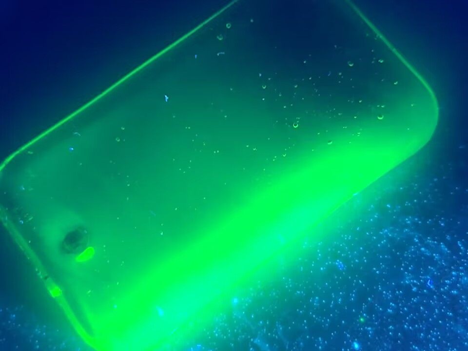
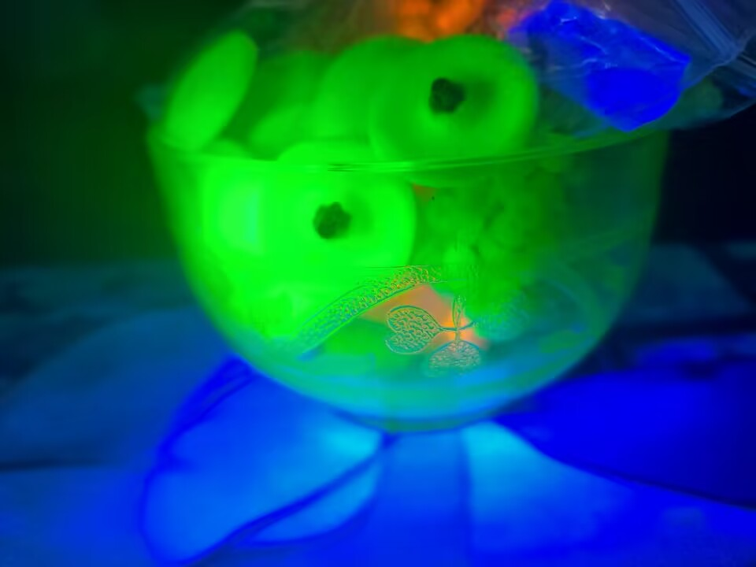
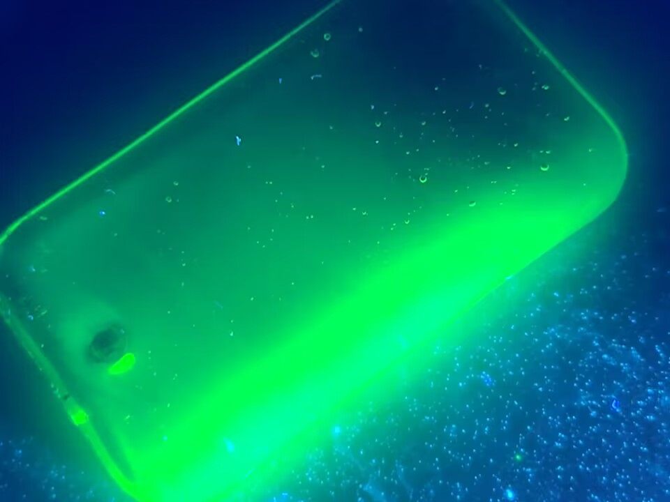
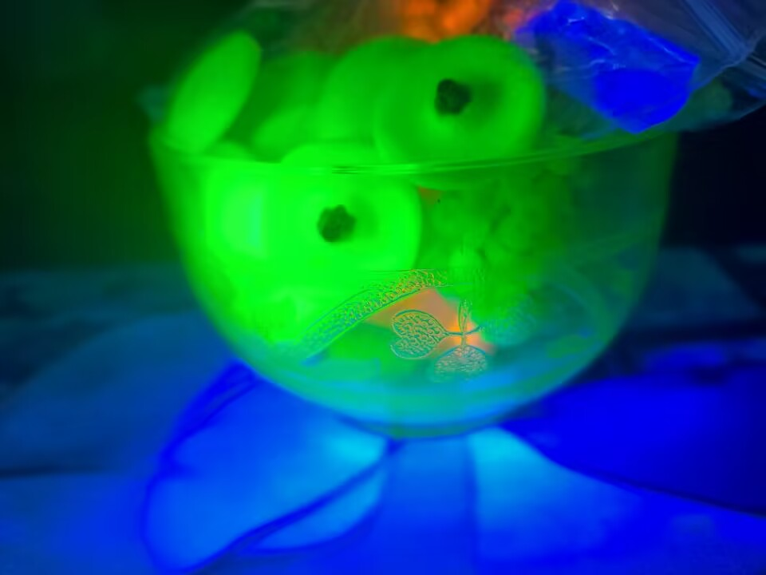
这大概是众所周知的了（笑）一些常见的列子:香蕉、低钠盐,各种钾盐等、含钾肥料、某些动物饲料等
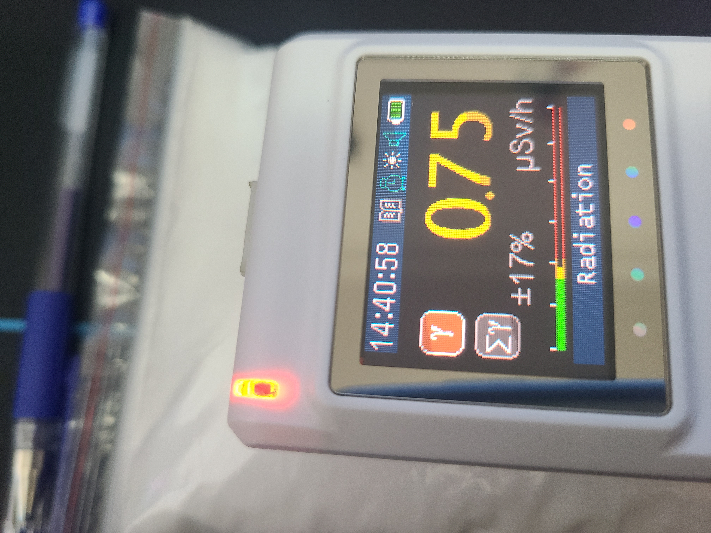 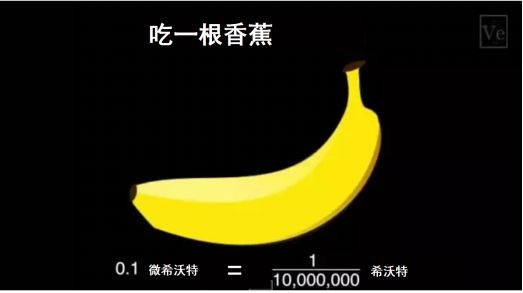图片展示的是一包500g氯化钾的放射性剂量（β）
有关链接列如一些花岗岩大理石可能会含有一定量的232Th、238U.据说花岗岩现在装修不让使用了就是因为放射性真伪性存疑？
矿石主要为含/富集U、Th、Ra的矿石如：磷灰石、重晶石、独居石等稀土矿物以及一系列名字带有铀、钍、镭的矿物.
从左到右分别为:花岗岩、绿磷灰石、蓝磷灰石（β）
雨天会导致放射性沉降.随着雨水被带下来的放射性核素主要为214Pb、214Bi因为这些核素都非常短命指短半衰期
没多久就很难使用盖革计数器检测到它们发出的射线了. ps：有微量的10Be也会被带下来但貌似不太好检测
↑这里是一个YouTube视频如果您看到一个空白那大概是网络问题.
乘坐飞机时，乘客所受到的辐射主要来自于“宇宙射线”，这是一种具有相当大能量的带电粒子流，属于天然本底辐射。
联合国原子辐射效应科学委员会(United Nations Scientific Committee on the Effects of Atomic Radiation，UNSCEAR)计算过，
一次10小时飞行受到的电离辐射剂量约0.03mSv(具体的剂量和季节、地理位置、飞行高度都有关)。科学研究表明，高度每增加2千米，宇宙射线产生的辐射剂量就会增加一倍。距离地表10000米的高空上，宇宙射线的强度大约有0.006毫希沃特每小时6uSv/hr
，在这样的高空环境下飞行两个小时(大约是从北京到上海的距离)，接受的照射量大约为0.012毫希沃特。
坐飞机时的剂量 图:2014
电离式烟雾探测器探测含有一枚镅源在正常情况下，接触大量 Am-241 的可能性很小。在核武器试验的土壤、植物和水中发现了少量。一些 烟雾探测器 含有非常少量的 Am-241。只要探测器未被篡改并按照指示使用，烟雾探测器中的镅就不会对健康造成危害。处置烟雾探测器时，请遵循制造商的说明或咨询当地消防部门以获取说明。
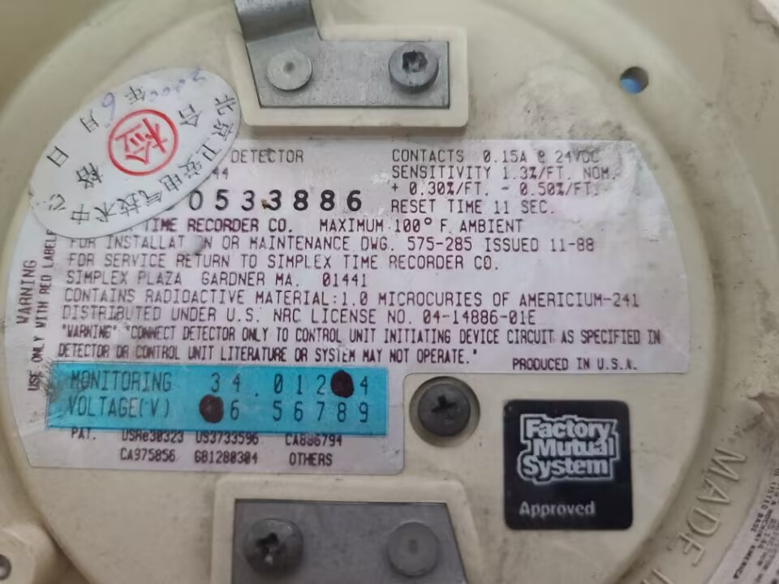历史上，镭用于医疗和设备以及飞机手表等仪表的被动照明。如果您发现此类设备，推荐联系当地环保局处理.
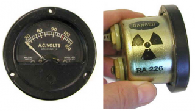图片来源：橡树岭联合大学
天然钍几乎存在于所有岩石、土壤、水、植物和动物中。如果岩石或沙子中的钍浓度较高，则可能会开采和提炼钍，从而产生废品，例如工厂尾矿。
如果控制不当，风和水会将尾矿带入更广阔的环境中。处理钍的商业和设施也可能将钍释放到空气、水或土壤中。人造钍同位素很少见，几乎从不进入环境。
钍用于制造陶瓷、焊条、相机和望远镜镜头、耐火砖、耐热涂料和用于航空航天工业以及核反应的金属。由于钍天然存在于环境中，因此人们会接触空气、食物和水中的微量元素。量通常非常小，对健康的危害很小。大多数人不会接触到危险水平的钍。
然而，居住在钍矿区或某些遗留工业设施附近的人可能会增加对钍的接触。偶尔，家居用品中可能会发现钍，例如一些在釉料中使用铀和钍的旧陶瓷器。这些通常不会造成严重的健康风险，但作为谨慎的避免措施，还是停止使用它们比较好。
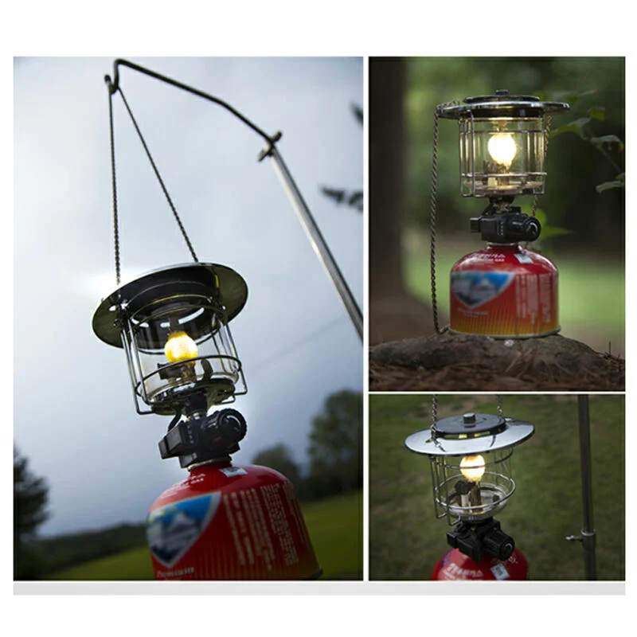 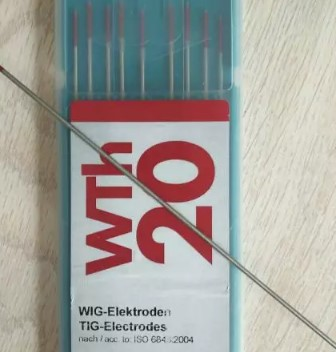铀天然存在于几乎所有的土壤、岩石和水中。岩石分解形成土壤。土壤可以被水移动和被风吹动，从而将铀移动到溪流、湖泊和地表水中。
在环境中发现的铀有 99% 以上以 U-238 的形式存在。铀 234 不到所有形式天然铀的百分之一，但放射性要高得多。它释放出环境中发现的所有形式铀的几乎一半的放射性。
一个人可能通过吸入空气中的灰尘或摄入水和食物而接触到铀。一般人群主要通过食物和水接触到痕量铀。
学校科学实验室可能会保留少量不同浓缩水平的铀，用来演示盖革计数器等。这些源的放射性水平很低，如果处理得当，不会对人造成伤害。
家庭橱柜中可能会有一些铀玻璃器皿 使用紫外线灯照射可以确定它们
如果有绿色荧光那大概率是了，不过不要担心它们的放射性通常很低很低可以拿在手上把玩，但不推荐真的使用它们来装食物进食
尤其是酸性物质，列如可乐，会导致铀从玻璃中析出.
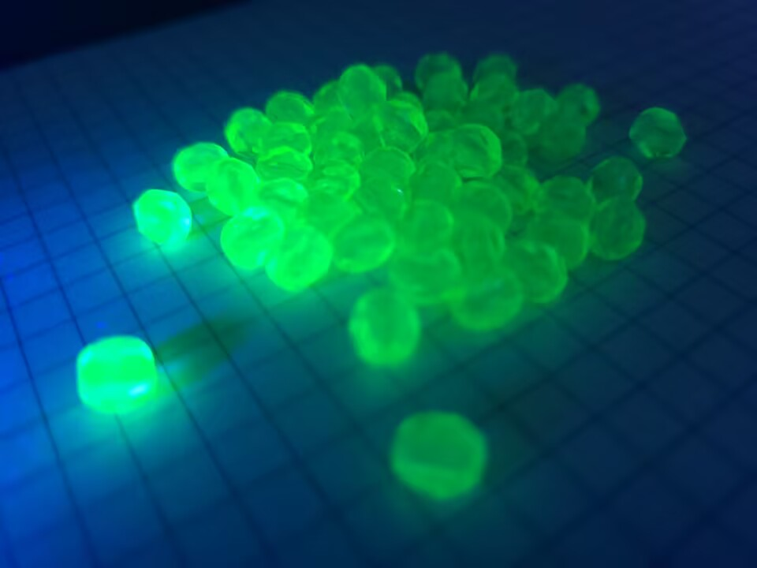
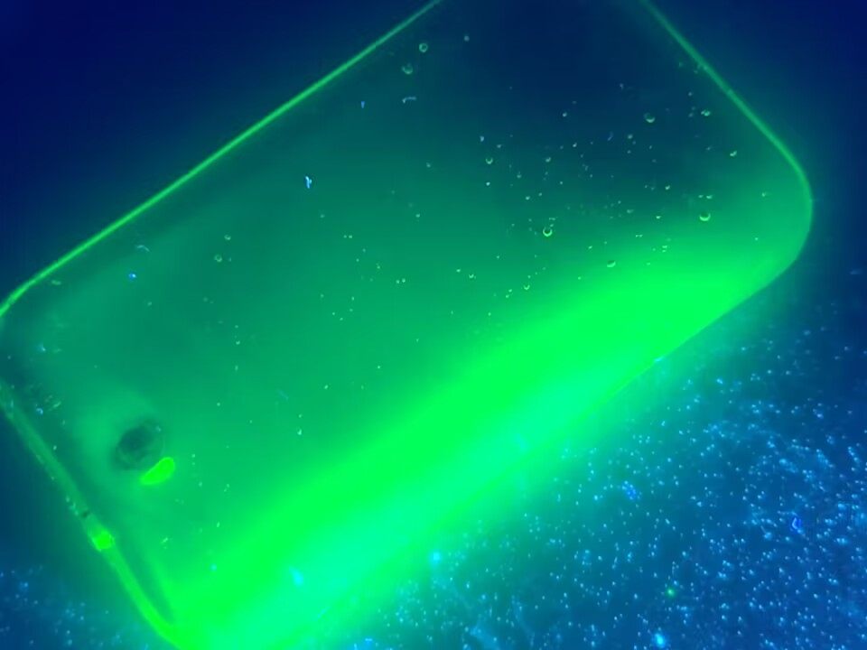
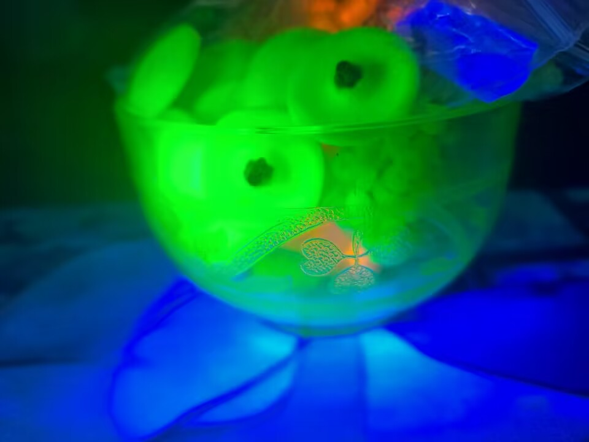
一些紫外线下的铀玻璃照片.
地表水的天然镭 226 含量通常在 0.0037 至 0.0185 贝克勒尔/升 (Bq/L) 或 0.1 至 0.5 皮居里/升 (pCi/L) 之间。
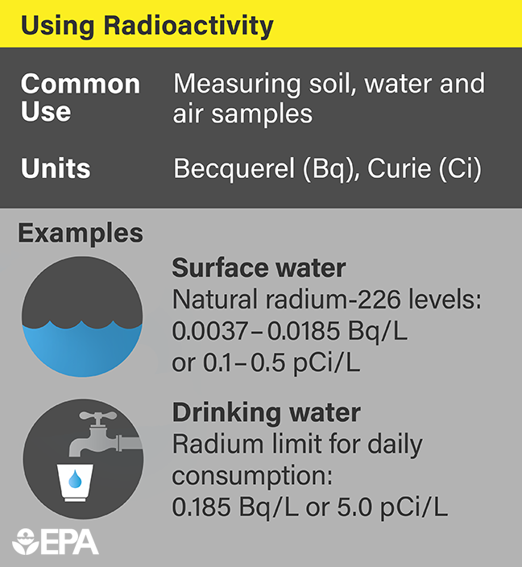